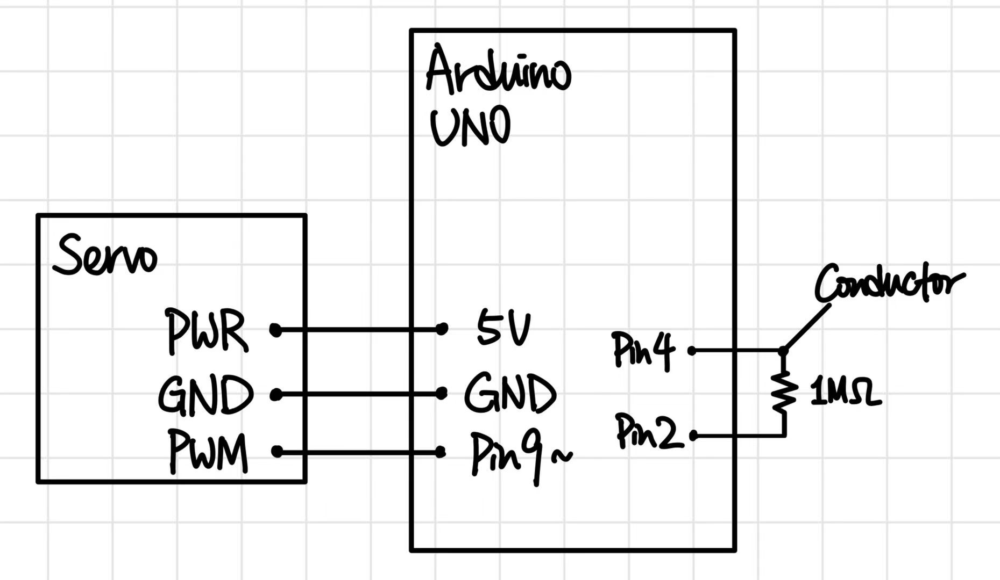
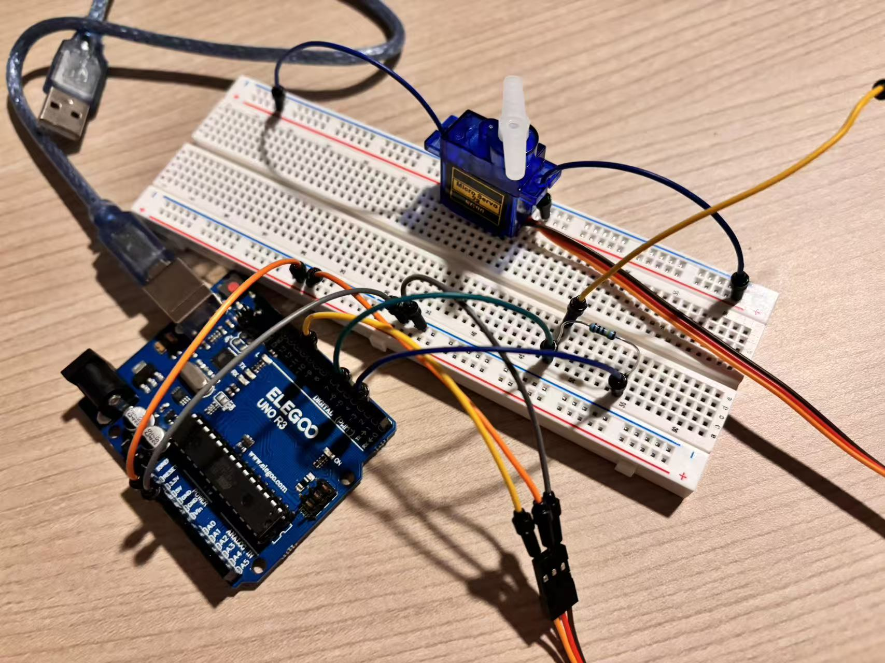
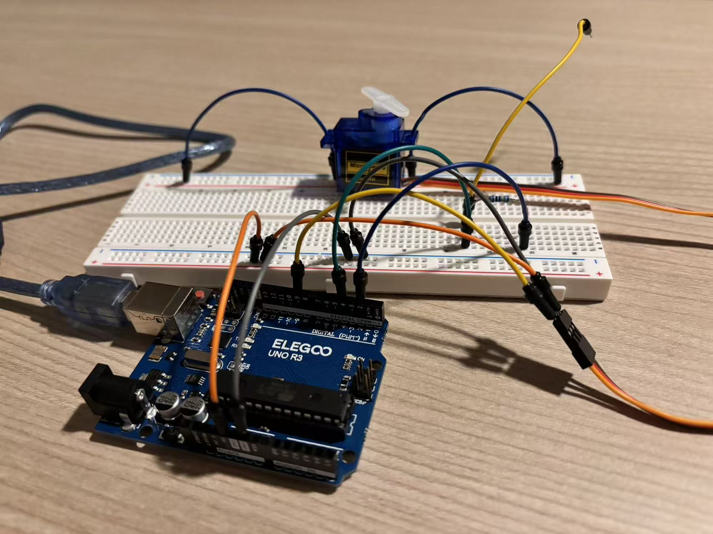
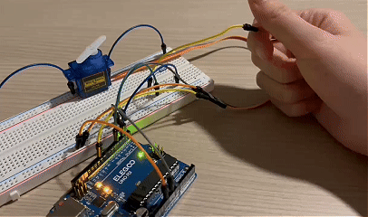
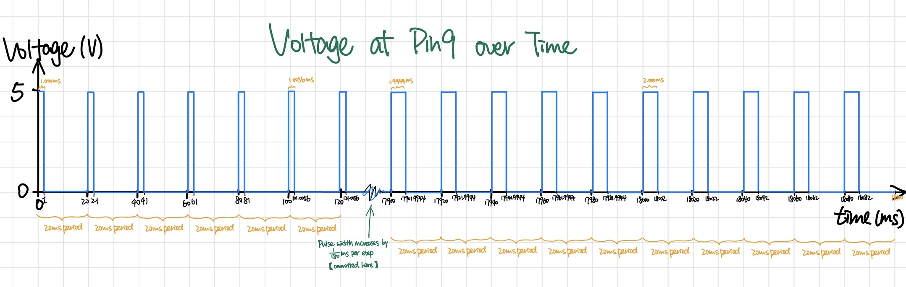

Schematic

Schematic Description:
This circuit uses a capacitive touch sensor as the input and a servo motor as the output.
- Input: A 1MΩ resistor connects Pin 2 (send) and Pin 4 (receive). A conductive object is attached to Pin 4. When a human touches the conductor, it changes the capacitance, which the Arduino can detect.
- Output: The servo motor's PWM signal pin is connected to Pin 9 (a PWM-capable pin). The servo's power and ground are connected to the Arduino's 5V and GND pins.
Circuit


Firmware
// Derived from CapitiveSensor Library Demo Sketch by Paul Badger 2008
#include <CapacitiveSensor.h>
// Derived from Servo library to control the servo motor
#include <Servo.h>
// Set up the Capacitive sensor with send pin 2 and receive pin 4
CapacitiveSensor cs_2_4 = CapacitiveSensor(2, 4);
// create Servo object to control a servo
Servo myServo;
// Define the threshold value (above this means touched)
int threshold = 1000;
// variable to store the servo position
int currentAngle = 0;
// Variable to track if the sensor is currently being touched
bool touched = false;
// Setup function runs once at the beginning
void setup() {
// Begin Serial communication to print values
Serial.begin(9600);
// turn off autocalibrate on channel 1
cs_2_4.set_CS_AutocaL_Millis(0xFFFFFFFF);
// attaches the servo on pin 9 to the Servo object
myServo.attach(9);
// Set the initial position of the servo to 0 degrees
myServo.write(0);
}
// Loop function runs repeatedly forever
void loop() {
// Variable to hold the sum of multiple readings for averaging
long total = 0;
// Loop 10 times to take multiple samples for smoothing (calibration)
for (int i = 0; i < 10; i++) {
// Call the function to get the capacitive sensor value with 30 samples and add to the total sum
total += cs_2_4.capacitiveSensor(30);
}
// Calculate the average sensor value to filter out noise
long sensorValue = total / 10;
// Print the label "Sensor: " to the serial monitor
Serial.print("Sensor: ");
// Print the averaged sensor value and move to a new line
Serial.println(sensorValue);
// Check if the reading is above threshold AND the sensor was not already touched
if (sensorValue > threshold && touched == false) {
// Mark the sensor as touched
touched = true;
// Check if the servo is currently at 0 degrees
if (currentAngle == 0) {
// Change the target angle to 90 degrees
currentAngle = 90;
} else {
// Change the target angle back to 0 degrees
currentAngle = 0;
}
// tell servo to go to position in variable 'currentAngle'
myServo.write(currentAngle);
}
// Check if the reading is below threshold AND the sensor was previously touched
else if (sensorValue < threshold && touched == true) {
// Reset the touched state
touched = false;
}
// Wait for 50 milliseconds to prevent reading too fast
delay(50);
}
Value Justification:
- int threshold = 1000
I tested the sensor readings and found that when the sensor is not touched, the value is around 20, and when touched, it jumps to 1000+.
- for (int i = 0; i < 10; i++) {
To avoid Fuzzy signal, I used a moving average by taking the average of 10 readings, which helps with smoothing. - total += cs_2_4.capacitiveSensor(30)
Call the function to get the capacitive sensor value with 30 samples, which helps to reduce noise without sacrificing too much response time.
Circuit's Operation

Additional Questions
Q1: Say you are using a servo motor you attach to pin 9. In your loop() you have the following code:
void loop() {
for (pos = 0; pos <= 180; pos += 1) {
myservo.write(pos);
delay(100);
}
}
Draw a graph with the x-axis as time and the y-axis as voltage at pin 9 with respect to ground.
void loop() {
for (pos = 0; pos <= 180; pos += 1) {
myservo.write(pos);
delay(100);
}
}

Q2: Your input device is slightly broken, leading it to give us an erroneous reading 1% of the time. How can we address this? Answer in (pseudo)code.
We can use a median filter to remove outliers from the readings.
// assuming a sort function exists
int readings[WINDOW];
void loop() {
readings[index] = analogRead(A0);
sorted = sort(readings);
filtered_val = sorted[WINDOW/2];
}
Q3: Your input device is slightly noisy, leading the measurement to randomly deviate from the true measurement up or down by 10%. How can we address this? Answer in (pseudo)code.
We can use a moving average to smooth out the noise.
int total = 0;
for (int i = 0; i < 10; i++) {
total += analogRead(A0);
}
int average = total / 10;
Q4: Did you use AI tools in completing this assignment? If yes, please provide details on how/when, as well as a brief reflection. If you used an LLM, please 'share' your conversation and include it as part of your submission, or cite the prompt(s) you used and the output. If no, you can either leave this question blank, or provide other information if you'd like.
I used DeepSeek AI to help me check my understanding of the questions and to provide some suggestions for my answers. I found it helpful to clarify my thoughts and ensure that I was on the right track. The conversation can be accessed here.